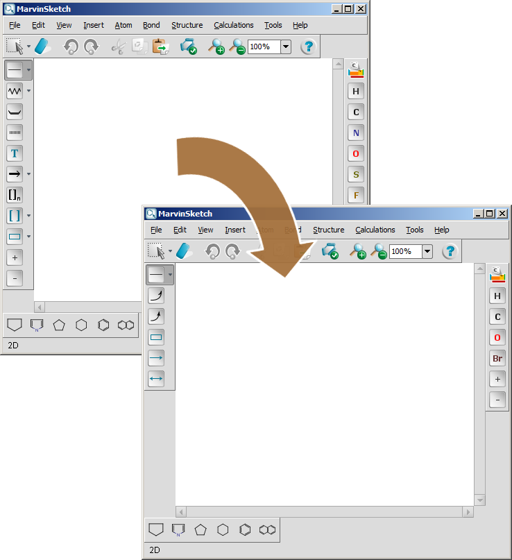

The Customization document demonstrates an easy, interactive way of GUI personalization.
This document shows how to use the same interactive method to customize the GUI if MarvinSketch is used as an applet being on a server or as a JavaBean.
Note, that API and XSD will also be available very soon.
USER_HOME/CHEMAXON_DIR/VERSION/customization.xml,
where
USER_HOME is C:\Documents and Settings\USERNAME on Windows,
/home/USERNAME on UnixCHEMAXON_DIR is chemaxon (Windows) or.chemaxon (Unix)VERSION is the actual version number of MarvinSketch,
with which the customization is madeC:\Documents and Settings\USERNAME\chemaxon\5.0.0\customization.xml/home/USERNAME/.chemaxon/5.0.0/customization.xml
msketch_param("menuconfig", "http://example-server.org/marvin/configuration.xml");msketch_param("menuconfig", "files/marvin/configuration.xml");
UserSettings userSettings=new UserSettings();
userSettings.put("menuconfig", "org/example/configuration.xml");
MSketchPane sketchPane=new MSketchPane(userSettings);
The Configurations document describes built-in
alternative schemas for personalized GUIs.
To make a configuration schema to be the default, the identifier of the desired configuration
has to be set in a simple xml file.
The identifiers of the available configurations are below:
Configuration Identifier Marvin default Classic Marvin classic ISIS/Draw-like config1 ChemDraw-like config2
The contents of the configuration file:
<?xml version="1.0" encoding="UTF-8"?>
<customization active="config1">
</customization>
This example shows a configuration file which performs the following changes:
The result is shown in the picture below:
The content of the default scheme of the configuration file is as follows:
<scheme id="default">
<modify path="toolbar/atoms/atom.N" visible="false"/>
<modify path="toolbar/atoms/atom.S" visible="false"/>
<modify path="toolbar/atoms/atom.F" visible="false"/>
<modify path="toolbar/atoms/atom.P" visible="false"/>
<modify path="toolbar/atoms/atom.Cl" visible="false"/>
<modify path="toolbar/atoms/atom.I" visible="false"/>
<add path="toolbar/atoms">
<item id="increaseCharge"/>
<item id="decreaseCharge"/>
</add>
<order itemorder="periodicSystem/atom.H/atom.C/atom.N/atom.O/atom.S/atom.F/atom.P/atom.Cl/atom.Br/atom.I/increaseCharge/decreaseCharge" path="toolbar/atoms"/>
<modify index="1" path="toolbar/tools" row="0" visible="false"/>
<toolbar anchor="west" id="CustomToolbar-0" index="0" name="Custom-Tools-Palette" row="0">
<item id="bondGroup"/>
<item id="insertElectronFlow"/>
<item id="insertElectronFlow2"/>
<item id="insertRectangle"/>
<item id="insertArrow"/>
<item id="insertTwoHeadedArrow"/>
</toolbar>
</scheme>
Currently using a configuration file is the only way to change the GUI of applets or beans. The possibility of using the API will be available soon.
Note that the graphical user interface of MarvinView and MarvinSpace can not be customized yet.